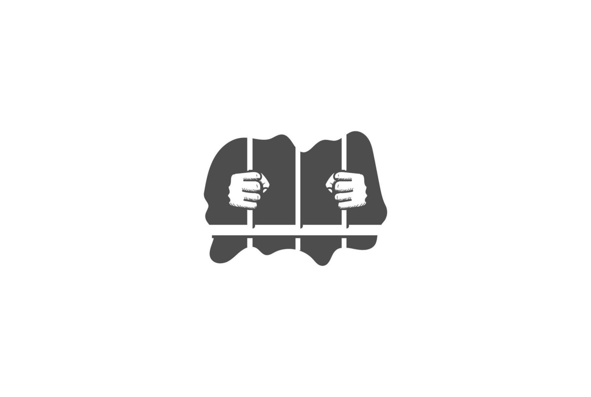

Car Rental Management System
A Car Rental Management System is a software application designed to streamline and automate the operations of a car rental business. It provides a comprehensive solution for managing various aspects of the
rental process, including vehicle inventory, customer information, reservations, billing, and reporting. The system typically includes features such as:
- Vehicle Management: Allows the rental company to maintain a database of available vehicles, including details such as make, model, year, rental rates, and availability status.
- Customer Management: Enables the rental company to store and manage customer information, including contact details, rental history, and payment information.
- Reservation System: Provides a user-friendly interface for customers to make reservations online or through a mobile app. It allows customers to select their desired vehicle, rental duration, and pickup/drop-off locations.
- Billing and Payment Processing: Facilitates the generation of invoices, calculation of rental fees, and processing of payments. It may also include features for handling discounts, promotions, and late fees.
- Reporting and Analytics: Offers tools for generating reports on rental activity, revenue, and customer behavior. This helps the rental company make informed business decisions and optimize their operations.
Overall, a Car Rental Management System helps rental companies improve efficiency, enhance customer satisfaction, and increase profitability by automating key processes and providing valuable insights into their business operations.

Prison Management System
A Prison Management System is a software application designed to assist in the administration and management of correctional facilities. It provides a comprehensive solution for managing various aspects of prison operations, including inmate
information, staff management, security, and reporting. The system typically includes features such as:
- Inmate Management: Allows prison staff to maintain a database of inmates, including personal information, incarceration details, behavior records, and rehabilitation programs.
- Staff Management: Enables the prison administration to manage staff schedules, assignments, and training records. It may also include features for tracking staff performance and ensuring compliance with regulations.
- Security Management: Provides tools for monitoring and managing security measures within the prison, such as access control, surveillance systems, and incident reporting.
- Visitation Management: Facilitates the scheduling and management of inmate visitations, including visitor registration, appointment scheduling, and visitor screening processes.
- Reporting and Analytics: Offers tools for generating reports on inmate behavior, staff performance, security incidents, and other key metrics. This helps prison administrators make informed decisions and improve overall facility management.
Overall, a Prison Management System helps correctional facilities improve efficiency, enhance security, and provide better care for inmates by automating key processes and providing valuable insights into prison operations.
Bidding System
A Bidding System is a software application designed to facilitate the process of buying and selling goods or services through competitive bidding. It provides a platform for buyers and sellers to interact, submit
bids, and manage transactions. The system typically includes features such as:
- Bid Management: Allows sellers to create and manage listings for their products or services, including details such as descriptions, images, and starting bid prices. Buyers can view listings and submit their bids.
- Auction Types: Supports various auction formats, such as English auctions (where the highest bid wins), Dutch auctions (where the price decreases until a buyer accepts), and sealed-bid auctions (where buyers submit confidential bids).
- Bid Tracking: Provides tools for tracking the status of bids, including bid history, current highest bid, and time remaining for the auction. This helps buyers and sellers stay informed about the bidding process.
- Payment Processing: Facilitates the secure processing of payments between buyers and sellers once an auction is completed. It may include features for handling refunds, disputes, and transaction history.
- Reporting and Analytics: Offers tools for generating reports on bidding activity, sales performance, and customer behavior. This helps sellers optimize their listings and make informed business decisions.
Overall, a Bidding System helps buyers and sellers engage in competitive transactions, improve market efficiency, and provide a convenient platform for conducting business online.